zuericssstyle is an R package that provides CSS styles and styled Shiny components aligned with the corporate design of the City of Zurich. The package includes reusable styling utilities and widgets that enable the development of Shiny applications consistent with the visual identity guidelines of the City of Zurich.
The components included in this package are base on styling and widgets previously developed and used by Statistik Stadt Zürich for building Shiny applications.
Installation
You can install the latest version of zuericssstyle directly from this repository:
# install.packages("devtools")
devtools::install_github("StatistikStadtZuerich/zuericssstyle")Alternatively, you can download the repository as a ZIP archive. After extracting the files to a local directory (e.g. your Desktop), install the package using:
remotes::install_local("<path_to_location>/zuericssstyle-main")Version
To check the currently installed version of zuericssstyle, run:
packageVersion("zuericssstyle")Usage
zuericssstyle provides a set of wrapper functions around widgets from Shiny to apply styling consistent with the corporate design of the City of Zurich. These wrapper functions extend the original widgets while allowing additional arguments to be passed through the underlying Shiny functions.
bslib cards
Cards from bslib can be used both in Shiny applications and in other HTML outputs. The CSS included in zuericssstyle (both the general CSS and the Shiny-specific CSS, see below) provides styling for these card components.
When creating cards, we recommend using a heading element inside card_header to ensure consistent typography and spacing.
library(bslib)
card(
card_header(h5("A random header")),
card_body(
markdown("Some text with a [link](https://www.stadt-zuerich.ch/de/politik-und-verwaltung/statistik-und-daten.html)")
),
card_footer("a footer")
)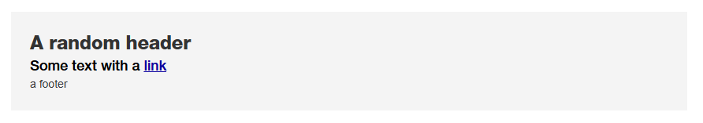
Styled Shiny Widgets
All widgets styled by zuericssstyle require the package’s CSS to be loaded. The CSS is automatically included in the HTML dependency when using either ssz_page() or add_zcss_deps().
The recommended approach is to use ssz_page() as a styled drop-in replacement for fluidPage() from Shiny:
ui <- ssz_page(...)If your application uses a different page layout (e.g. fixedPage()), you can instead wrap the UI definition with add_zcss_deps() to include the required CSS dependencies:
ui <- add_zcss_deps(fixedPage(...))This ensures that all zuericssstyle widgets are rendered with the correct styling. All additional arguments supported by the underlying Shiny functions can be passed to the corresponding ssz* functions.
Numeric Input
sszNumericInput() provides a styled numeric input field based on numericInput() from Shiny.
sszNumericInput("number", "Zahl", 4)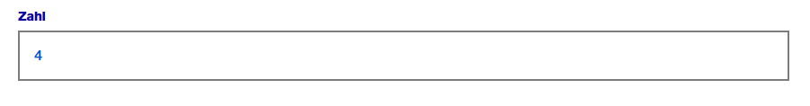
Select Input
sszSelectInput() provides a styled version of selectInput() from Shiny.
sszSelectInput(
"select",
"Destination",
choices = c("HOU", "LAX", "JFK", "SEA"),
selected = "LAX"
)
sszSelectInput(
"selectmultiple",
"Destination (Multiple)",
choices = c("HOU", "LAX", "JFK", "SEA"),
multiple = TRUE
)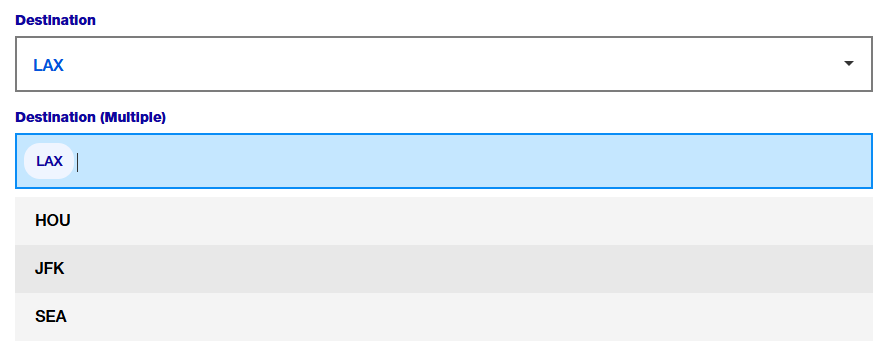
Radio Buttons
sszRadioButtons() provides a styled version of radioButtons() from Shiny.
sszRadioButtons(
inputId = "ButtonGroupLabel",
label = "Flughafen:",
choices = c("EWR", "JFK", "LGA"),
selected = "JFK"
)
sszRadioButtons(
inputId = "ButtonGroupLabelHorizontal",
label = "Flughafen",
choices = c("HOU", "LAX", "JFK"),
selected = "JFK",
inline = TRUE
)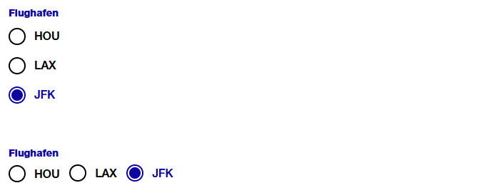
Radio Group Buttons
sszRadioGroupButtons() provides a styled version of radioGroupButtons() from shinyWidgets.
sszRadioGroupButtons(
inputId = "years",
choices = 2022:2024,
selected = 2022 # default value
)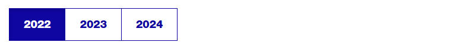
Text Input
sszTextInput() provides a styled version of textInput() from Shiny.
sszTextInput("suchfeld", "Name:")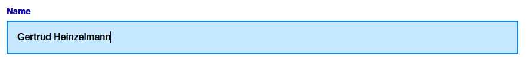
Autocomplete
sszAutocompleteInput() provides an autocomplete-enabled text input based on autocomplete_input() from the dqshiny package.
sszAutocompleteInput(
"name",
"Geben Sie einen Namen ein",
options = c("aoqiheu", "acdzvxp", "aqneluk", "aeloxch")
)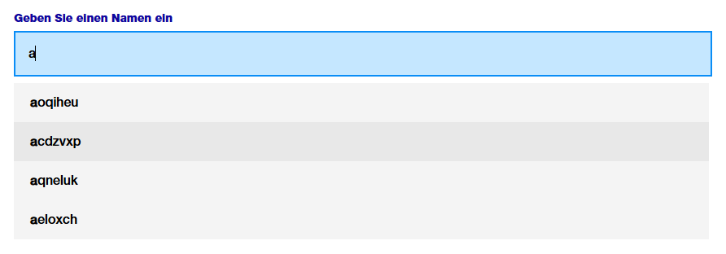
Slider Input
sszSliderInput() provides a styled version of sliderInput() from Shiny. Note: As of 2024-10-16, the slider styling is not officially part of the corporate design guidelines. Therefore, the appearance of this widget may change in future versions of this package.
sszSliderInput("choose_numbers",
"Input",
value = c(30, 60),
min = 0,
max = 100
)
sszSliderInput("choose_number",
"Single Input",
value = c(30),
min = 0,
max = 100
)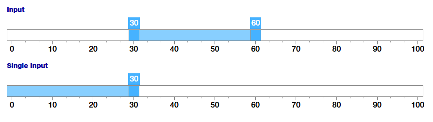
Action Button
sszActionButton() provides a styled version of actionButton() from Shiny.
sszActionButton("ActionButtonId", "Abfrage starten")
Download Buttons
sszDownloadButton() provides a styled download button based on downloadButton() from Shiny.
sszDownloadButton("csvDownload",
label = "CSV",
image = icons_ssz("download")
)
sszDownloadButton("excelDownload",
label = "XLSX",
image = icons_ssz("download")
)
sszDownloadButton("downloadDownload",
image = icons_ssz("download")
)
sszOgdDownload("ogdDownload",
href = "https://data.stadt-zuerich.ch/"
)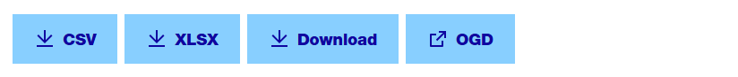
The label argument specifies the text displayed on the button. It must be one of "Download", "CSV", or "XLSX". The default value is "Download".
The image argument allows an icon or image to be displayed before the button text. It should be supplied as an HTML <i> or <img> tag. The default is NULL, meaning no icon is shown.
A button linking to an external resource can be createt using sszOgdDownload(). Provide the appropriate link in the href parameter
Date Range
sszDateRange() provides a styled version of dateRangeInput() from Shiny. By default, the language is German and the date format is dd.mm.yyyy. This and additional parameters to Shiny’s dateRangeInput can be passed as parameters.
sszDateRange("DateRange", "Datum",
start = "2001-01-01",
end = "2010-12-31",
min = "2001-01-01",
max = "2012-12-21",
separator = icons_ssz("calendar"),
weekstart = 1
)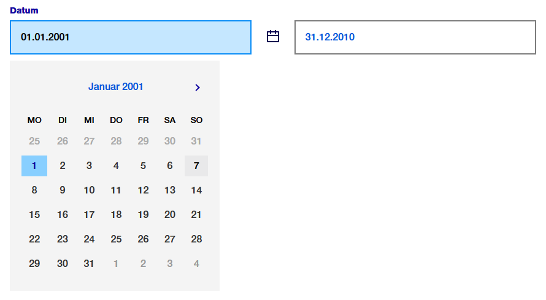
Date Selection with Air Datepicker
sszAirDatepickerInput() provides a styled wrapper around airDatepickerInput() from shinyWidgets. Unlike dateRangeInput(), it allows selecting years only or years and months, in addition to full dates. By default, the language is German and the date format is dd.mm.yyyy.
You can optionally supply a custom calendar icon using an HTML image tag with htmltools::tags$img(...).
sszAirDatepickerInput(
inputId = "airMonthStart2",
label = "Basis Datum",
dateFormat = "MM-yyyy",
view = "years",
minView = "months",
autoClose = TRUE,
ssz_icon = img(icons_ssz("calendar"))
)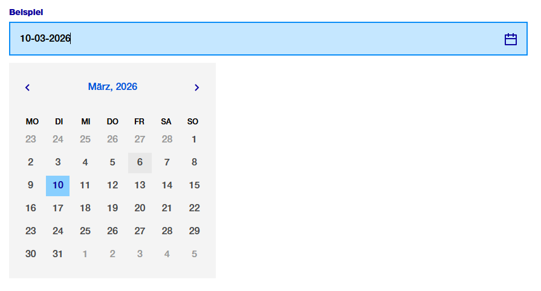
Other Styling Options
Tables
zuericssstyle provides CSS classes to style reactable tables in a way that is consistent with the corporate design. The styling includes borderless, minimal design with subtle striped background for readability.
reactable(iris,
paginationType = "simple",
language = reactableLang(
noData = "Keine Einträge gefunden",
pageNumbers = "{page} von {pages}",
pagePrevious = "\u276e",
pageNext = "\u276f"
)
)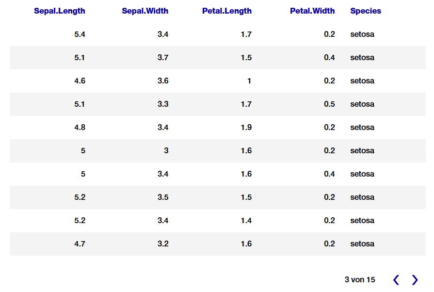
Context Box
sszContextBox() provides a styled box for additional contextual information, such as definitions, explanations, or glossary entries. It is intended to give users background or context information without indicating a warning (see sszWarningBox()).
The layout uses a flexible container to align the icon and text, and applies package-specific CSS classes to ensure consistent styling.
The icon argument allows an icon or image to be displayed before the text. The default is NULL, meaning no icon is shown.
sszContextBox(
title = "Information mit Icon",
text = "Laboris laborum aute id laboris culpa esse aliquip nisi anim velit. Minim sunt eiusmod do laborum amet ut magna. Labore dolore id nostrud enim Lorem pariatur ad dolore id eiusmod adipisicing laboris laborum minim.",
icon = icons_ssz("info-help-filled")
)
sszContextBox(
title = "Informationen ohne Icon",
text = "Laboris laborum aute id laboris culpa esse aliquip nisi anim velit. Minim sunt eiusmod do laborum amet ut magna. Labore dolore id nostrud enim Lorem pariatur ad dolore id eiusmod adipisicing laboris laborum minim."
)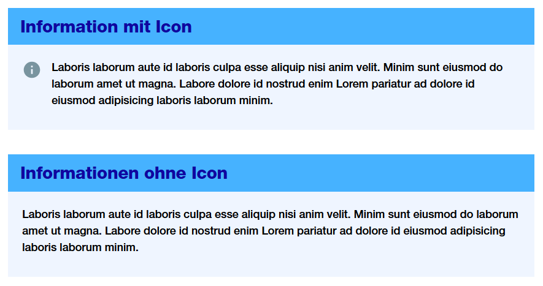
Info and Warning Box
sszInfoBox() provides a styled box for query-related informational messages, such as summaries or explanations about the current results. It is meant to convey neutral information regarding the query itself, rather than warnings or general context.
sszWarningBox() provides a styled warning box to alert users to potential issues, errors, or important considerations regarding the query or its results.
The layout uses a flexible container to align the icon and text, and applies package-specific CSS classes to ensure consistent styling. sszInfoBox() and sszWarningBox() use both the same CSS classes.
The icon argument allows an icon or image to be displayed before the text. The default is NULL, meaning no icon is shown.
sszInfoBox(
title = "A message with the wrong sender will not be answered and will be deleted.",
text = "Laboris laborum aute id laboris culpa esse aliquip nisi anim velit. Minim sunt eiusmod do laborum amet ut magna. Labore dolore id nostrud enim Lorem pariatur ad dolore id eiusmod adipisicing laboris laborum minim.",
icon = icons_ssz("info-help-filled")
)
sszWarningBox(
title = "Title Error",
text = "Laboris laborum aute id laboris culpa esse aliquip nisi anim velit. Minim sunt eiusmod do laborum amet ut magna. Labore dolore id nostrud enim Lorem pariatur ad dolore id eiusmod adipisicing laboris laborum minim.",
icon = icons_ssz("important-warning-filled")
)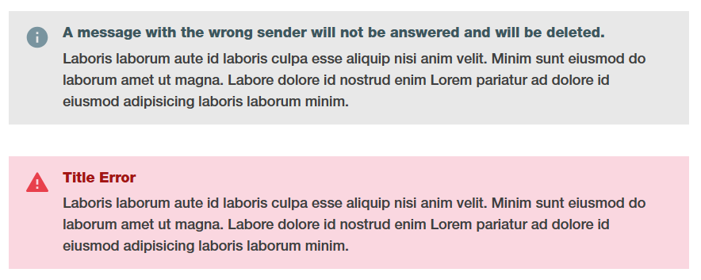
Div for Chart Buttons
The .ssz-chart-buttons CSS class can be applied to a <div> to create a flexible layout with centered content and a buttom margin, suitable for grouping chart-related buttons.
Example usage:
div(
class = "ssz-chart-buttons",
sszRadioGroupButtons(
inputId = "choice_year",
choices = c(2022, 2023, 2024)
)
)Tooltip
zuericssstyle also provides CSS classes for tooltip styling (.tooltip-container, .tooltip-title, .tooltip-content, .tooltip-row). For an example, see inst/examples/tooltip/app.R. This example demonstrates how to use the CSS classes only; it does not provide graphs fully styled according to the corporate design of the City uf Zurich. For fully styled charts, refer to the zueriplots documentation.
Getting Help
If you encounter a bug, please open an issue or contact statistik@zuerich.ch.